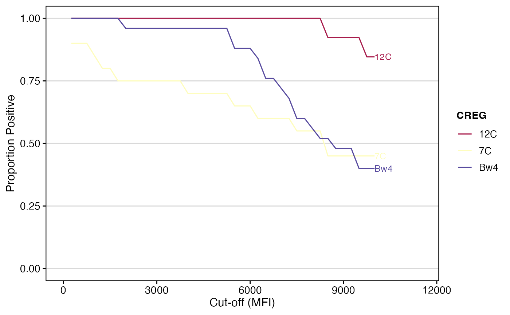
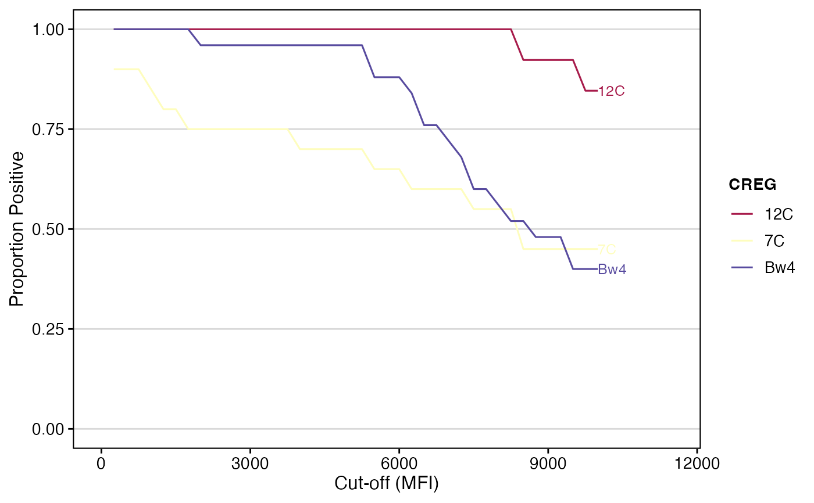

This function provides a unified interface for analyzing Single Antigen Bead (SAB) data against different antigenic features, such as eplets, cross-reactive groups (CREGs), or serology. It computes the proportion of features that are positive above a sequence of MFI cut-offs and integrates that to obtain an area-under-the-curve (AUC).
Depending on user arguments, it can either generate a ggplot or return the AUC results as a data.frame.
Usage
calculateAUC(
result_file,
analysis_type,
feature_filter = 3,
percPos_filter = 0.8,
group_by = NULL,
label = TRUE,
cut_min = 250,
cut_max = 10000,
cut_step = 250,
plot_results = TRUE,
palette = "spectral",
evidence_level = c("A1", "A2"),
eplet_filter = 3,
top_eplets = 10,
creg_filter = 3,
serology_filter = NULL,
...
)
epletAUC(
result_file,
evidence_level = c("A1", "A2"),
eplet_filter = 3,
top_eplets = 10,
...
)
cregAUC(result_file, creg_filter = 3, ...)
serologyAUC(result_file, serology_filter = 3, ...)Arguments
- result_file
A data frame of SAB results or a path to a CSV/XLS/XLSX file.
- analysis_type
Character. The type of analysis to perform. Must be one of `"eplet"`, `"creg"`, `"serology"`.
- feature_filter
Integer. The minimum number of beads/alleles that must carry the feature for it to be included in the analysis. Defaults to `3`.
- percPos_filter
Numeric (0-1). The minimum proportion of beads that must be positive for at least one cut-off to keep the feature. Defaults to `0.8`.
- group_by
Character. The aesthetic used to color curves in the plot.
- label
Logical. If `TRUE`, labels the curves on the plot. Defaults to `TRUE`.
- cut_min, cut_max, cut_step
Range and step for MFI cut-offs.
- plot_results
Logical. If `TRUE` (default), returns a `ggplot` object. If `FALSE`, returns a summarized tibble with AUC results.
- palette
Character. A color palette name (see `grDevices::hcl.pals`) or a custom palette function. Defaults to `"spectral"`.
- evidence_level
For eplet analysis, a character vector of evidence levels to keep.
- eplet_filter
For eplet analysis, the minimum number of times an eplet must appear.
- top_eplets
For eplet analysis, the maximum number of top eplets to display.
- creg_filter
For CREG analysis, the minimum number of times a CREG must appear.
- serology_filter
For serology analysis, a filter to be applied.
- ...
Additional arguments passed to the plot theme.
Value
Either a `ggplot` object or a data.frame with AUC results. The data.frame will contain columns for the feature (`eplet`, `creg`, `serology`), `AUC`, `norm_AUC`, `total_count`, and `loci`.
Examples
# Calculate eplet AUC
epletAUC(deepMatchR_example[[1]])
 # Get data instead of plot
auc_data <- epletAUC(deepMatchR_example[[1]], plot_results = FALSE)
head(auc_data)
#> eplet AUC total_count loci norm_AUC
#> <char> <num> <int> <char> <num>
#> 1: 82LR 7817.708 24 A; B 0.7817708
#> 2: 80I 7022.059 17 A; B 0.7022059
#> 3: 69AA 5641.667 15 B 0.5641667
#> 4: 163EW 6691.667 15 A; B 0.6691667
#> 5: 41T 9583.333 12 B 0.9583333
#> 6: 65QIA 4761.364 11 B 0.4761364
# Calculate CREG AUC
cregAUC(deepMatchR_example[[1]])

# Get data instead of plot
auc_data <- epletAUC(deepMatchR_example[[1]], plot_results = FALSE)
head(auc_data)
#> eplet AUC total_count loci norm_AUC
#> <char> <num> <int> <char> <num>
#> 1: 82LR 7817.708 24 A; B 0.7817708
#> 2: 80I 7022.059 17 A; B 0.7022059
#> 3: 69AA 5641.667 15 B 0.5641667
#> 4: 163EW 6691.667 15 A; B 0.6691667
#> 5: 41T 9583.333 12 B 0.9583333
#> 6: 65QIA 4761.364 11 B 0.4761364
# Calculate CREG AUC
cregAUC(deepMatchR_example[[1]])
